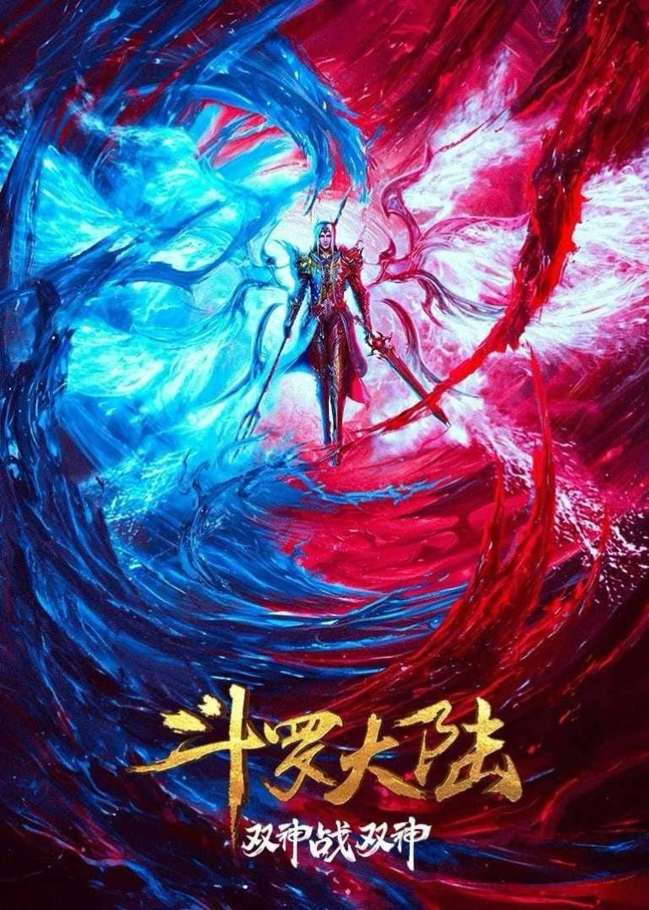

battle through the heavens
Xiao Yan is a genius child who suddenly loses all his powers. In a world governed by strength and power, Xiao Yan's lack of talent is an embarrassment to his family.

soul land
Tang San and his best friend Xiao Wu journey to the Shrek Academy to cultivate their skills and become prominent soul masters.
throne of seal
Long Haochen joins the Knights Temple. As he grows, an adventure unfolds. He wins the recognition of others and fights with the Six Temples against the demons..